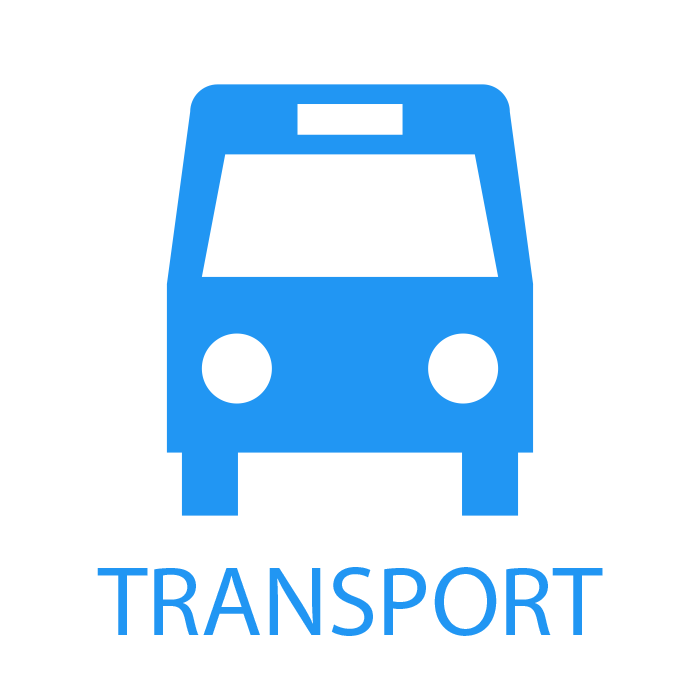
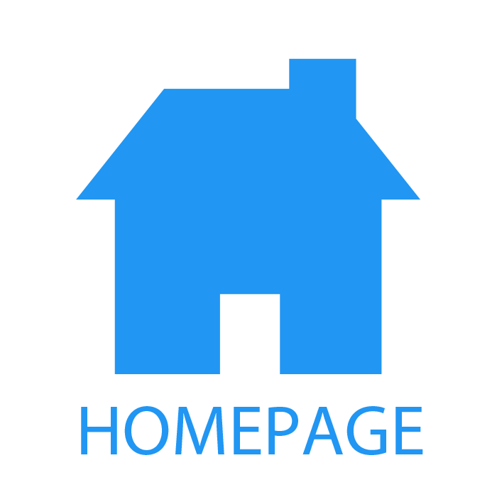

Namsan Tower
Location: (location details)


Description:
The N Seoul Tower (Hangul: N서울타워), officially the YTN Seoul Tower and commonly known as the Namsan Tower or Seoul Tower, is a communication and observation tower located on Namsan Mountain in central Seoul, South Korea. At 236m, it marks the highest point in Seoul. Built in 1971, the N Seoul Tower is Korea's first general radio wave tower, providing TV and radio broadcasting in Seoul. Currently, the tower broadcasts signals for Korean media outlets, such as KBS,MBC and SBS.